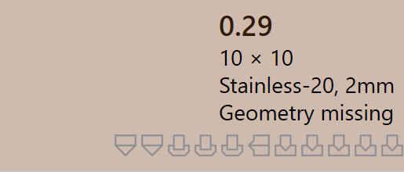

Stav dílu
Když je díl importován do TruSmartCAM, je k dílu automaticky zpracována příslušná technologie zpracování plechu. Jako součást tohoto procesu TruSmartCAM provádí
Stav dílu se zobrazuje přímo na dlaždici dílu pod názvem dílu a označuje aktuální validační stav dílu.
Typy stavů dílů popisují různé stavy, ve kterých se díl může nacházet v důsledku validačních kontrol na úrovni dílu. Tyto stavy označují problémy související s návrhem, materiálem nebo geometrií dílu a musí být vyřešeny před zahájením nástrojového vybavení.
Chyby dílu
Chyba CAD (Computer-Aided Design) nastává, když existuje problém v návrhu nebo geometrii dílu, jako jsou otevřené obrysy, chybějící geometrie nebo nepřiřazený materiál. Tyto chyby pocházejí z CAD modelu a brání dalšímu zpracování dílu.
-
Neproveditelný ohyb : TruSmartCAM se automaticky pokouší najít platnou metodu ohýbání pro díl. Pokud nemůže najít žádné vhodné řešení ohýbání, díl je označen jako bend infeasible.
-
Cut infeasible : Pokud jsou varování ohýbání ignorována, TruSmartCAM se poté pokusí najít metodu řezání. Pokud není nalezeno žádné platné řešení řezání, díl je označen jako cut infeasible.


Chyby materiálu
-
Materiál neexistuje : Tloušťka dílu je čtena z CAD modelu a porovnána s materiály v databázi surovin TruSmartCAM. Pokud není nalezen odpovídající materiál, díl je označen chybou Materiál neexistuje.
-
Materiál nepřiřazen : Pokud CAD model nemá mapovací pole materiálu nebo je pole prázdné, TruSmartCAM nemůže přiřadit materiál. V tomto případě je díl označen chybou Materiál nepřiřazen.


Chyby geometrie
-
Rozpoznány otevřené kontury : CAD soubor má jeden nebo více otevřených (neúplných) tvarů, což brání správnému nástrojovému vybavení.
-
Rozpoznáno více vnějších kontur : CAD soubor má více než jednu vnější uzavřenou smyčku, což vytváří nejasnosti během zpracování.
-
Nascent error : Když je díl načten z tabulky (CSV nebo XLSX), ale skutečný CAD soubor chybí, je označen jako nascent díl.
-
Chybějící geometrie : CAD model nemá žádnou platnou geometrii nebo je geometrie nečitelná, což ji činí nepoužitelnou pro nástrojové vybavení.


